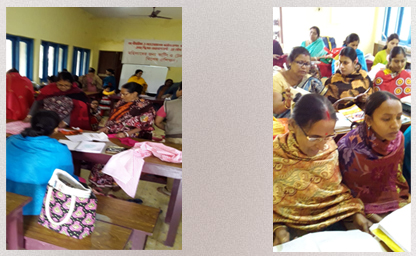

Garments and dress designing
This programme was initially launched in partnership with Naba Niharika, Kolkata(NGO working in the field of empowerment to impart training on cutting, stitching and tailoring. This was started as a level one or basic training programme for women from weaker sections in Mallickpur in South 24 Parganas (South) district of West Bengal, in 2018
Until the year 2024, about150 women have been imparted training in cutting stitching, tailoring and embroidery work from different parts of the district including interior villages around Ghoshpara , Hariharpur and Mallickpur. The programmes are designed to impart skills in use of sewing machines, dress cutting, and stitching.

Upscaling partnerships
Rotary-Singer partnership on stitching and designing: This initiative has evolved further to build corporate partnership through corporate social responsibility connected with this sector. Awareness Foundation’s sewing centre at Urvashi, Mallickpur, has got recognition from Singer, India. A Memorandum of Understanding (MOU) was signed on December 20, 2024 as a tripartite partnership in which the Awareness Foundation, the Singer and the Rotary Club Calcutta (Pointers) have partnered and joined in this effort with their sponsorship of training activities. The Singer supported Training Centre was inaugurated on January 13, 2025 with Project 'Swabolombi' whereby all trainees undergoing training will be taught the skills to become independent and self- sufficient through skill enrichment.

Digital literacy programme
In 2019 , the Awareness Foundation had started a digital literacy programme to impart basic computer skills to the children from the economically weaker sections of the society. This is designed to help them not only in learning basic computer skills but also become empowered to participate in the process of digitalisation of education and knowledge which our society is presently witnessing. It will also enable the trainees to prepare for better employability as and when they reach the age of productive service.
Rotary-Bosch Bridge Programme for digital literacy and better employability A Rotary Bosch Bridge skilling Centre has been set up by the Awareness Foundation at Urvashi, Mallickpur. This is a tripartite partnership between Awareness Foundation, Rotary Club presidency and the Bosch company that has started the BRIDGE programme. This is a composite programme of digital and soft skills.
A MOU was signed on January 11, 2025 between the Awareness Foundation and Rotary Club, Calcutta Presidency. It is a training programme of three months duration with a two month theoretical exposition and a one month internship and on the job training for students of 10-12 standards and students who have discontinued their college education to gain better employability. The course will focus on proficiency in fundamental computer skills, specialised skills relevant to the job domain and essential life skills, spoken English abilities and industry specific expertise, and effective interview skills.The first batch of trainees will begin their training from 17 February 2025 onwards.

Building knowledge support network
The Awareness Foundation also convenes stakeholder meets, workshops and meetings to share experience and also deliberate on matters related to skill building, livelihood employability. It has made an effort to build resource persons network for knowledge support, to enrich the curriculum of the training and skill building programme, and to improve outreach to the target groups.
This process started In 2017 with an expert group round table workshop at its site office to discuss and seek advice on skill development. Experts from different and relevant fields of expertise including ecology, social work and skill training, banking and finance, statistics and quality control, economics and geography had convened at this workshop.
That was the genesis of skill mapping in the local region for designing of short term courses; networking with local and relevant institutions for imparting training, developing a framework for skill building and social enterprises and self-employment.
In January 2017, a rural Executive Development Programme was held in partnership with the Central Bank of India “On Essentials of Doing Business “’ at its site office in Mallickpur in the 24 Parganas South District of West Bengal, near Kolkata. This Programme succeeded in mobilizing 23 rural self-employed persons with diverse entrepreneurial backgrounds. The most dramatic impact was the overwhelming response from the self-employed rural women.
Expert Meet on Occupational Safety and Health: The Awareness Foundation had organised an expert meet on Occupational safety and Health at at offsite location in Kalyani Nadia on 23rd November 2024. This Meet was organised to discuss possibilities of setting up a centre for best practices with civil society actors who are active in this field.

Feugiat lorem aenean
Aenean ornare velit lacus, ac varius enim lorem ullamcorper dolore. Proin aliquam facilisis ante interdum. Sed nulla amet lorem feugiat tempus aliquam.

Amet varius aliquam
Aenean ornare velit lacus, ac varius enim lorem ullamcorper dolore. Proin aliquam facilisis ante interdum. Sed nulla amet lorem feugiat tempus aliquam.